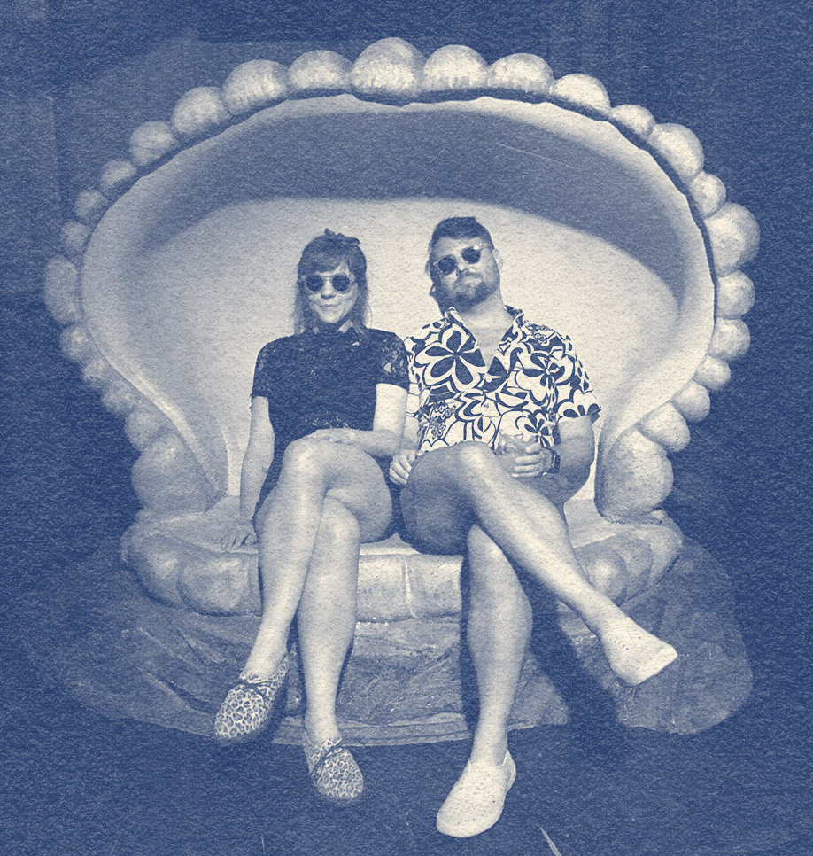

About Comfort, Texas
A Hill Country gem operating at a different speed. Founded by German freethinkers in the 1850s, Comfort remains an independent, unincorporated community to this day. The town draws treasure hunters, entrepreneurs, and a wide range of residents seeking a slower pace in Texas’ famed Hill Country. River floats, wine-tasting, antiques, and wildlife all within reach.

Schedule of Events
This will be a full weekend affair. Get some.
Friday 10/29
Welcome Supper
Join us for a casual evening at local favorite Comfort Pizza. Meet and greet over wood-fired pies and local beverages. Starting at 5:00p.
Saturday, October 30
Wedding!
Guests to arrive at the Ingenhuett around 5:00p for a cocktail in the courtyard. Ceremony to start at golden hour--around 5:30p. Dinner, drinks, and dancing to follow. After hours rendezvous at the Meet Market across the street.
Sunday, October 31 👻
Halloween Brunch!
photo of La Catrina
Lite fare, Layton’s famous bloody marys, and one last chance to hang and hug before we slowly make our way back to our respective realities. Costumes encouraged.
